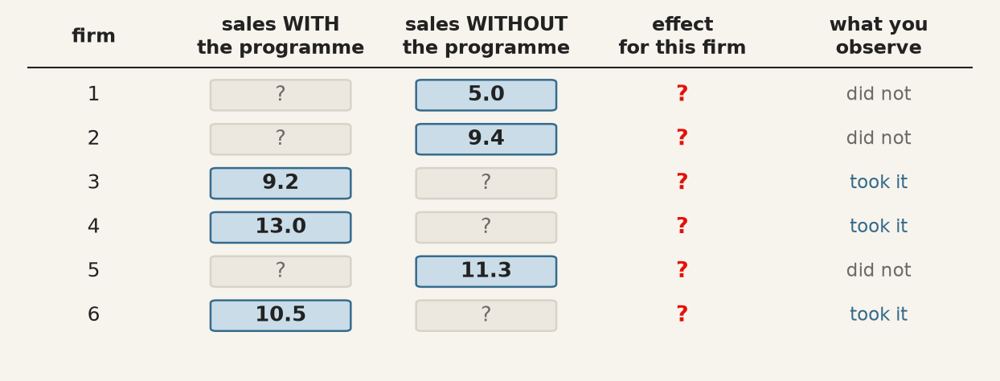
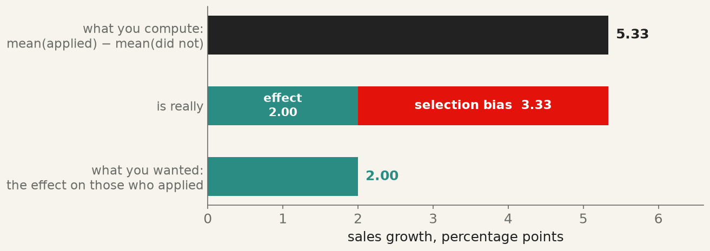
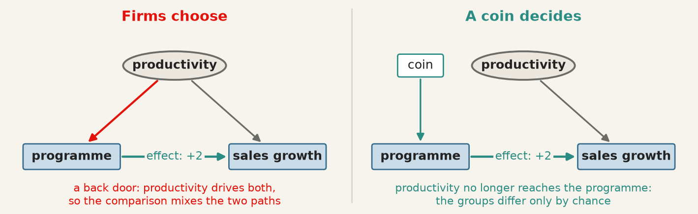
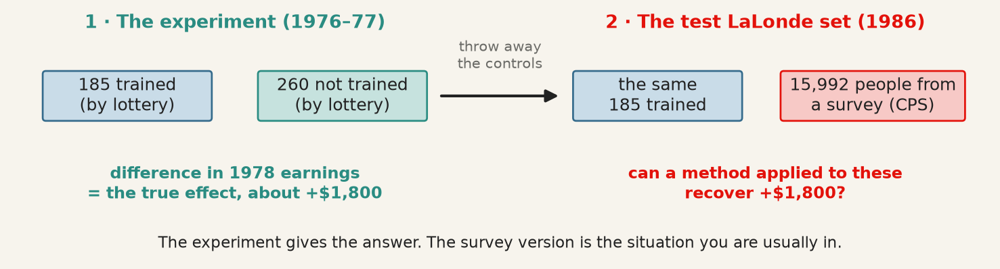
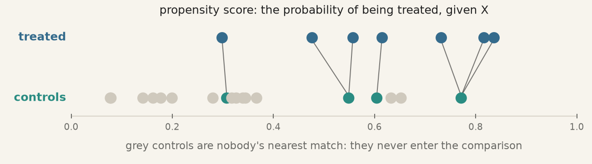
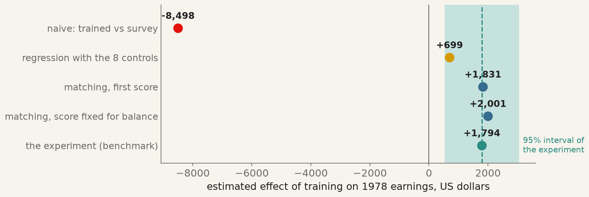
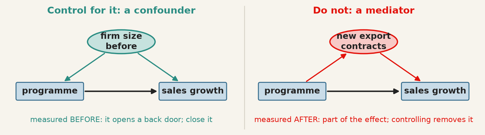

10.1 The question the first nine chapters could not answer
Every method so far has described an association and then, carefully, declined to call it an effect. Chapter 2 insisted on “associated with” rather than “causes”. Chapter 6 showed the same association taking four different values depending on which variation identified it. Chapter 9 produced two models with identical fit and opposite causal arrows.
The reason for all that caution is that the question — did the policy do anything? — is not a question about the data you have. It is a question about data you do not have and cannot get.
David Hume · 1711–1776
Asked what entitles us to say one thing causes another, and did not find a satisfying answer. Neither has anyone since.
Allan Ramsay, 1766. Public domain, via Wikimedia Commons.
From the archive · Hume, 1739
David Hume asked what we actually observe when we say one thing causes another, and answered: contiguity, succession, and constant conjunction. The billiard ball moves; another moves after it; this has always happened. What we never observe is the necessary connection — the thing that would make the second event have to follow.
His second formulation is the one that founded modern causal inference, though it took two centuries to be taken up. A cause, he wrote, is an object followed by another, and where, if the first object had not been, the second never had existed. That subordinate clause is a counterfactual: a statement about a world that did not happen. It cannot be observed, in principle, for the same reason a road not taken has no destination.
Hume treated this as a sceptical problem about knowledge. Modern statistics treats it as a missing data problem, which turns out to be the more productive framing — because missing data can sometimes be recovered, under assumptions you can state, defend and occasionally test.
10.2 Potential outcomes
The framework that formalises Hume’s clause is due to Neyman and, in its modern form, to Rubin (Rubin 1974). For each unit \(i\) define two quantities:
\[
Y_i(1) = \text{the outcome if unit } i \text{ is treated},
\qquad
Y_i(0) = \text{the outcome if it is not}.
\]
Both are properties of the unit, defined whether or not the treatment happens. The causal effect for that unit is the difference
and it is exactly what Hume said we cannot observe: whichever treatment the unit receives, the other potential outcome is missing, permanently and by construction. This is the fundamental problem of causal inference(Holland 1986), and it means that no individual causal effect is ever identified. What we can hope for is an average.

The table you never get to see. Each firm has two potential outcomes; whichever choice it made, the other is missing, and so is its effect. The numbers come from the simulation later in this chapter, where, unusually, both columns exist.
ATE — average treatment effect, \(\mathrm{E}[Y(1) - Y(0)]\) over the whole population. What would happen if everyone were treated versus no one.
ATT — average treatment effect on the treated, \(\mathrm{E}[Y(1) - Y(0) \mid T = 1]\). What the treatment did for those who actually received it. Usually the policy-relevant quantity, and usually not equal to the ATE.
Now the arithmetic that explains why naive comparisons fail. What you can compute from data is the difference in observed means. Add and subtract the same term:
The second term is the difference between the treated and untreated groups in the absence of treatment. If countries that adopt a policy would have differed from those that did not even without it, the observed difference is the effect plus that gap, and nothing in the data separates them.

The decomposition in numbers, from the simulated firms below. The naive comparison says 5.33; the programme’s effect is 2.00; the other 3.33 is how much faster the joining firms would have grown anyway.
10.3 Randomisation, and what it buys
Randomised assignment sets the selection term to zero, and it is worth being precise about why. If treatment is assigned by a coin flip, then \(T\) is independent of everything about the unit — including \(Y(0)\) and \(Y(1)\) — so \(\mathrm{E}[Y(0) \mid T{=}1] = \mathrm{E}[Y(0) \mid T{=}0]\) and the bias term vanishes.
Note what randomisation does not do. It does not make the groups identical; in any finite sample they will differ, sometimes substantially. It makes them differ in a way unrelated to the outcome, so the difference is noise rather than bias — and noise is what standard errors are for. It also balances variables nobody measured or thought of, which is the property no observational method can replicate.

Left: productivity drives both the decision to join and growth, so the comparison runs through a back door. Right: a coin decides, productivity can no longer reach the programme, and the back door is shut.
When randomisation is unavailable, and in international business it usually is — countries are not randomly assigned national strategies — the alternative is to assume something strong enough to recover the same result.
Conditional independence (unconfoundedness, ignorability) — given a set of covariates \(X\), treatment is as good as random: \(\lbrace Y(0), Y(1)\rbrace \perp T \mid X\). Every determinant of both treatment and outcome is in \(X\). This assumption is not testable, because it concerns the missing potential outcome.
Overlap (common support) — for every value of \(X\), the probability of treatment is strictly between 0 and 1. If some countries would never adopt under any circumstances, there is no comparison to be made for them, and an estimate that includes them is extrapolating rather than comparing. Unlike conditional independence, overlap is checkable.
10.4 A world where the answer is known
Everything above can be watched happening in a simulation, which is the one setting where both potential outcomes exist. A thousand firms; a programme that adds exactly two points to every firm’s export growth; and a productivity that nobody in the ministry observes, which raises growth with or without the programme.
Run it: a coin flip against self-selection, with the truth known
import warningswarnings.filterwarnings("ignore")import numpy as npimport pandas as pdimport matplotlib.pyplot as pltimport statsmodels.formula.api as smffrom sklearn.neighbors import NearestNeighborsrng = np.random.default_rng(10)n =1000productivity = rng.normal(0, 1, n)sales_without =10+3* productivity + rng.normal(0, 2, n)sales_with = sales_without +2# the true effect, for every firmapplies = (productivity + rng.normal(0, 1, n) >0.5).astype(int)observed = np.where(applies ==1, sales_with, sales_without)naive = observed[applies ==1].mean() - observed[applies ==0].mean()bias = sales_without[applies ==1].mean() - sales_without[applies ==0].mean()print(f"self-selection naive {naive:.2f} = effect 2.00 + selection bias {bias:.2f}")draws = []for _ inrange(1000): # a thousand randomised experiments coin = rng.integers(0, 2, n) seen = np.where(coin ==1, sales_with, sales_without) draws.append(seen[coin ==1].mean() - seen[coin ==0].mean())print(f"coin flip mean of 1,000 estimates {np.mean(draws):.2f}, spread {np.std(draws):.2f}")
self-selection naive 5.33 = effect 2.00 + selection bias 3.33
coin flip mean of 1,000 estimates 2.00, spread 0.22
The two lines are the chapter’s argument in miniature. Self-selection overstates the effect by a factor of more than two and a half, and the excess is exactly the selection term: the joining firms would have grown 3.33 points faster without the programme. The coin is right on average and wrong in any single draw by about a quarter of a point, which is noise, which a standard error describes. The selection term cannot be computed in real data, since it needs the column nobody sees; what can be computed is how different the groups were before treatment, here about one standard deviation of productivity. That comparison — balance — is the diagnostic the rest of the chapter is built on.
10.5 LaLonde’s test
The simulation knows the answer because it wrote it. A real data set that knows the answer is rarer, and the most famous one is a job-training experiment.
The National Supported Work demonstration, run in the United States in 1976–77, assigned disadvantaged workers to a training placement by lottery. The lottery’s estimate of the effect on 1978 earnings is therefore credible. LaLonde (1986) then did something that has shaped the field since: he kept the trainees, threw away the lottery’s controls, replaced them with people from national surveys, and asked whether the estimators economists applied to survey data would recover the experiment’s answer. They did not, and the paper became the standard argument for experiments. Dehejia and Wahba (1999) returned to the same data with propensity-score matching and recovered it, and A. Smith and E. Todd (2005) showed how fragile that recovery is. The data are on Rajeev Dehejia’s NBER page, and pd.read_stata reads them directly.

The design. The experiment gives the true effect; the survey version is the situation applied work is usually in.
Run it: the experiment’s answer, and the naive survey comparison
experiment: +1,794 (SE 633)
naive: -8,498
regression: +699 (same eight controls, linear)
standardised differences before matching:
age -0.80
education -0.68
black 2.43
hispanic -0.05
married -1.23
nodegree 0.90
re74 -1.57
re75 -1.75
Training raised 1978 earnings by about $1,800 in the experiment. Against the survey, the naive comparison says it cut them by $8,500: the wrong sign and five times too large, because the survey’s average worker earned $14,000 a year before the programme and the trainees under $2,100. The standardised differences put that in common units — the gap in means divided by the pooled standard deviation — and most are between 0.7 and 2.4, against a convention that calls anything under 0.1 balanced.
Regression with all eight characteristics does much better, and is still off by more than half. The reason is worth understanding, because it is what matching fixes. A linear regression uses every survey respondent, including the thousands earning $30,000 who resemble no trainee, and lets a straight line carry the comparison from them to the trainees. The estimate depends on that line being right far outside the region where the trainees live.
10.6 The propensity score, and a match that fails its check
Rosenbaum and Rubin (1983) proved that if treatment is as good as random given \(X\), it is as good as random given the single number \(e(X) = P(T = 1 \mid X)\), the propensity score. Eight dimensions collapse to one, and matching becomes the nearest-neighbour problem of chapter 8 on one column.

Matching on the score. Each treated unit is joined to the control with the closest score; controls unlike every treated unit are never used.
Figure 10.1: The propensity score in the two groups, on a logarithmic scale. Almost every survey respondent has a score near zero, but every bin that contains trainees also contains some survey respondents: the overlap needed for matching exists.
score range, trained: 0.001 – 0.487
survey respondents with a score above 0.05: 534
Overlap is the checkable half of the identifying assumptions, and here it holds, barely: of almost sixteen thousand survey respondents, a few hundred look anything like a trainee. That is enough, because matching needs only one good control per trainee.
Run it: match on the first score, then check balance
nn = NearestNeighbors(n_neighbors=1).fit(control[["pscore"]])distance, index = nn.kneighbors(treated[["pscore"]])matched = control.iloc[index.ravel()]print(f"{len(treated)} trainees, {matched.index.nunique()} distinct controls, "f"largest score gap {distance.max():.4f}")print(((treated[X].mean() - matched[X].mean()) / sd).astype(float).round(2).to_string())
185 trainees, 124 distinct controls, largest score gap 0.0038
age 0.31
education 0.00
black 0.05
hispanic 0.07
married 0.09
nodegree 0.00
re74 0.01
re75 0.03
Matching with replacement lets a good control serve more than once, which is why 185 trainees use fewer distinct controls. Balance has improved enormously on earnings, race and schooling, but age is still out by 0.31: the logit has treated the probability of training as moving in one direction with age, and it does not. This is the moment the procedure is designed for. The response is to change the score and check again, and to do it without looking at the outcome, because a score chosen for the estimate it produces is a specification search with a respectable name.
10.7 A score that balances, and only then the outcome
Run it: a better score, the balance check, and the ATT
Figure 10.2: Standardised differences before matching (blue) and after matching on the improved score (orange). The dashed lines mark ±0.1. Every covariate ends inside them.
largest |difference| after matching: 0.09
ATT by matching: +2,001 experiment: +1,794
Age squared lets the probability of training rise and fall with age; the two indicators mark people who earned nothing in 1974 or 1975, which is most trainees and few survey respondents. With them, every standardised difference sits inside 0.1. The figure — a love plot — is the evidence a reader needs, and it is the evidence to report, rather than the logit’s coefficients or fit, which are a means and not an end.
Only now is the outcome looked at. The matched ATT is about $2,000, within a third of a standard error of the experiment.

Every estimate on one axis. Both matching estimates fall inside the experiment’s 95% interval; the naive comparison has the wrong sign, and the linear regression is pulled down by respondents who resemble no trainee.
Two cautions keep this from being a triumph. The first is uncertainty. The standard error printed by a regression on the matched sample ignores that the score was estimated and that controls were reused; a bootstrap that redoes the whole procedure is the honest version.
Run it: bootstrap the whole matching procedure
estimates = []for b inrange(200): t = treated.sample(len(treated), replace=True, random_state=b) c = control.sample(len(control), replace=True, random_state=1000+ b) nn_b = NearestNeighbors(n_neighbors=1).fit(c[["pscore"]]) _, idx = nn_b.kneighbors(t[["pscore"]]) estimates.append(t["re78"].mean() - c.iloc[idx.ravel()]["re78"].mean())print(f"bootstrap standard error of the ATT: {np.std(estimates):,.0f}")print(f"95% interval: {np.percentile(estimates, 2.5):+,.0f} to {np.percentile(estimates, 97.5):+,.0f}")
bootstrap standard error of the ATT: 900
95% interval: -42 to +3,309
(Strictly the score should be re-estimated inside each replication too; holding it fixed, as here, keeps the cell short and understates the spread a little.) The interval is wide — the matched estimate rests on 185 trainees and a much smaller number of distinct controls — and it comfortably contains the experimental answer. It also, worth saying plainly, reaches zero: on the survey data alone, matching cannot rule out that training did nothing, which the experiment, with its own controls, could.
The second caution is that one success is not a guarantee. LaLonde’s paper used a second survey, the Panel Study of Income Dynamics, and the same procedure there tells a less tidy story.
naive -15,205 ATT +1,665 distinct controls 56
age 0.11
education -0.17
black 0.11
hispanic -0.03
married 0.09
nodegree 0.21
re74 0.03
re75 0.01
The estimate is again close to the experiment, but balance is not achieved: four covariates stay outside 0.1, schooling and the no-diploma indicator by the most, and the whole match rests on a few dozen distinct controls. A careful analyst would report that, and would not present the closeness of the number as vindication, because in real work there is no experiment to compare with. A. Smith and E. Todd (2005) make the general point: the Dehejia–Wahba success depends on which subsample and which score, and the lesson is about the conditions under which matching works — rich pre-treatment earnings, comparison groups from the same labour market — rather than about matching as such.
10.8 The control that changes the question
Deciding what goes into the score is a claim about causal structure. The rule is to condition only on variables fixed before treatment, and the reason is clearest when it is broken.

A confounder, measured before treatment, opens a back door and should be controlled for. A mediator, created by the treatment, carries part of the effect, and controlling for it removes that part.
Run it: controlling for a mediator
rng = np.random.default_rng(10)size = rng.normal(0, 1, n) # before the programmejoins = (size + rng.normal(0, 1, n) >0.5).astype(int)contracts =1.5* joins + rng.normal(0, 1, n) # created by the programmegrowth =10+2* size +0.5* joins +1.0* contracts + rng.normal(0, 2, n)firms = pd.DataFrame({"size": size, "joins": joins, "contracts": contracts, "growth": growth})for formula in ["growth ~ joins", "growth ~ joins + size", "growth ~ joins + size + contracts"]:print(f"{formula:36}{smf.ols(formula, data=firms).fit().params['joins']:.2f}")print("true total effect: 0.5 direct + 1.5 × 1.0 through contracts = 2.0")
Without controls, selection on size inflates the estimate. Controlling for size — a confounder, fixed before the programme — recovers the total effect of 2. Adding new export contracts, which the programme itself creates, drops the estimate to the direct effect alone, because conditioning on a mediator holds fixed the channel through which most of the effect travels. The regression is not wrong; it answers a different and usually uninteresting question. The related case of a collider, a common consequence of treatment and outcome, is worse: conditioning on it creates an association that does not exist (Elwert and Winship 2014). Cinelli, Forney, and Pearl (2022) is the short guide worth keeping beside the keyboard.
“Closer to the right answer” is not the same as “the right method.” In real work the truth is unknown, so the only evidence available is whether the procedure is justified. A procedure that is wrong for a reason you can state will be wrong by an unknown amount in the next dataset, and no diagnostic will announce it.
10.9 What none of this fixes
Matching came within $210 of the truth on the CPS. It would be a mistake to conclude that it solved the problem, and the simulation shows why. Suppose the analyst sees only firm size, a noisy sign of the productivity that actually drove selection.
Run it: matching on a proxy for the real confounder
matched on size ATT 3.94 (truth 2)
matched on productivity ATT 2.21 (truth 2)
Matching on the variable that drove selection recovers the effect. Matching on a proxy for it leaves more than half of the bias in place — and size, the variable matched on, would look perfectly balanced. Balance can only be checked on what was measured; conditional independence is a claim about everything else, and it is untestable. On LaLonde’s data, matching worked because the survey records two years of earnings before the programme, which capture most of what decided who enrolled. Remove them and no score recovers the experiment.
The honest response is to ask how wrong the assumption could be. Sensitivity analysis asks how strong an unobserved confounder would have to be — how strongly associated with both treatment and outcome — to overturn the conclusion. If the answer is “about as strong as the covariates already controlled for”, the finding is fragile. If it is “stronger than any known determinant”, it is robust. Either way the reader learns something a point estimate does not tell them.
The deeper limitation is that matching and regression adjustment are the same assumption in different clothing. Both require that conditioning on observed covariates suffices. Matching implements it better — it compares like with like instead of extrapolating along a line — but neither creates identification. When the assumption fails, both fail, and in the same direction.
One caution about the method itself. Propensity-score matching is the most popular approach here and not the best one: matching on a scalar score discards information and can increase imbalance as the caliper tightens, a pathology documented at length by King and Nielsen (2019). Matching directly on the covariates, or weighting rather than matching, generally does better. The score remains a good diagnostic for overlap even where it is a poor matching device.
Chapter 11 takes the other route: rather than assuming the confounders are all observed, it uses the structure of when treatment arrived to difference the unobserved ones away.
10.10 A short review of the literature
The potential-outcomes notation is Rubin (1974), though the idea traces to Neyman’s 1923 work on agricultural experiments. Holland (1986) named the fundamental problem and drew the boundary the discipline still uses — “no causation without manipulation” — which remains contested and clarifying.
LaLonde’s 1986 comparison of experimental and non-experimental estimates of a job-training programme is the benchmark the matching literature is still judged against; Dehejia and Wahba (1999) showed propensity-score matching recovering the experimental answer, and A. Smith and E. Todd (2005) showed how much that depends on the sample and the specification.
Rosenbaum and Rubin (1983) proved the result that made observational adjustment tractable: if treatment is unconfounded given a covariate vector, it is unconfounded given the scalar propensity score alone, so a many-dimensional matching problem collapses to one dimension. Imbens (2004) surveys the estimators that followed and Stuart (2010) is the practical review, covering matching, weighting and the diagnostics that should accompany them.
The corrective literature is as important as the constructive one. King and Nielsen (2019) argues that propensity-score matching specifically — as opposed to matching in general — often increases imbalance and should be replaced by methods that match on covariates directly. Elwert and Winship (2014) sets out endogenous selection bias, the family of errors created by conditioning on colliders, and Cinelli, Forney, and Pearl (2022) gives the compact treatment of which controls help and which do damage.
10.11 What to report
The estimand, named. ATE or ATT — they answer different questions and matching usually estimates the second.
The identifying assumption, in words. Which variables are claimed to close every path from treatment to outcome, and why that list is complete. This is an argument, not a table.
Balance before and after, for every covariate, with standardised differences — a love plot. Not the propensity model’s coefficients or its fit. And say that the score was settled before the outcome was looked at.
Overlap, with the range of the score in both groups, and what you did about units outside common support.
The naive estimate alongside the adjusted one. The distance between them is the size of the selection problem, and hiding it hides the reason for the analysis.
A sensitivity analysis. How strong an unobserved confounder would need to be to overturn the result.
That every control is pre-treatment, and that you know it. If a covariate is measured after treatment, say why it is not a mediator or a collider — and if you cannot, drop it, even when it improves the number.
A. Smith, Jeffrey, and Petra E. Todd. 2005. “Does Matching Overcome LaLonde’s Critique of Nonexperimental Estimators?”Journal of Econometrics 125 (1-2): 305–53. https://doi.org/10.1016/j.jeconom.2004.04.011.
Cinelli, Carlos, Andrew Forney, and Judea Pearl. 2022. “A CrashCourse in Good and BadControls.”SociologicalMethods & Research 53 (3): 1071–1104. https://doi.org/10.1177/00491241221099552.
Dehejia, Rajeev H., and Sadek Wahba. 1999. “CausalEffects in NonexperimentalStudies: Reevaluating the Evaluation of TrainingPrograms.”Journal of the AmericanStatisticalAssociation 94 (448): 1053–62. https://doi.org/10.1080/01621459.1999.10473858.
Elwert, Felix, and Christopher Winship. 2014. “EndogenousSelectionBias: TheProblem of Conditioning on a ColliderVariable.”AnnualReview of Sociology 40 (1): 31–53. https://doi.org/10.1146/annurev-soc-071913-043455.
Imbens, Guido W. 2004. “NonparametricEstimation of AverageTreatmentEffectsUnderExogeneity: A Review.”Review of Economics and Statistics 86 (1): 4–29. https://doi.org/10.1162/003465304323023651.
King, Gary, and Richard Nielsen. 2019. “WhyPropensityScoresShouldNotBeUsed for Matching.”PoliticalAnalysis 27 (4): 435–54. https://doi.org/10.1017/pan.2019.11.
Rosenbaum, PAUL R., and DONALD B. Rubin. 1983. “The Central Role of the Propensity Score in Observational Studies for Causal Effects.”Biometrika 70 (1): 41–55. https://doi.org/10.1093/biomet/70.1.41.
Rubin, Donald B. 1974. “Estimating Causal Effects of Treatments in Randomized and Nonrandomized Studies.”Journal of EducationalPsychology 66 (5): 688–701. https://doi.org/10.1037/h0037350.
Stuart, Elizabeth A. 2010. “MatchingMethods for CausalInference: A Review and a LookForward.”StatisticalScience 25 (1): 1–21. https://doi.org/10.1214/09-STS313.